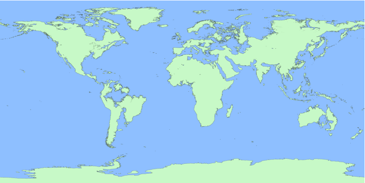

Conceito
Criado sexta-feira 15 julho 2022
Tudo comecou quando a gente tava numa call tudo junto e misteriosamente morremo tudo ao mesmo tempo.
Isso foi causado por El Gato, uma entidade misteriosa e fudida até o talo criada por Yobzera Apelão no fatidico dia 13/07/2022.
Após El Gato ter nos matado nos fomos todos teletransportados para milhares, se não milhoes, de anos no futuro. Ainda estamos na mesma terra de sempre mas como resultado da passada influencia humana o nivel do mar foi aumentado e varias partes do planeta foram submergidas para debaixo do oceano.
Para mais lore do mundo vai no Lore do mundo

(Mapa com uma qualidade melhor)
{kind=link}
Como esse novo mundo funciona
Apesar de se passar milhares de anos no futuro, este mundo ainda apresenta tecnologia e estetica similar ao fim do periodo medieval do humanidade passada.
Mas, diferente da humanidade passada, esse mundo possui magia. Pessoas, animais, plantas e qualquer ser vivo pode usar de magia para fazer diversas coisas como taca fogo congelar as coisa comer putas e varias outras façanhas mirabulantes.
Junto com a magia, foram trazidos para terra diversas ideias e conceitos de fantasia generica, como dragao, mago, bruxa, castelo, espiritos malignos, demonios e bla bla bla
Nossos personagens
Cada pessoa do servidor do bola™️ pode participar da historia e adicionar um pouco de personalidade para o mundo, pra isso voce precisa criar um personagem que sera você nessa historia isso pode ser baseado em alguma OC ou persona que você tem, BASEADO! Sua representação nao precisa ser exatamente igual voce ou a sua persona, se voce acha que seria melhor de algum outro jeito sinta se livre para trocar, a explicação na lore pra isso é que a teleportação do El Gato nao é totalmente perfeita e algumas coisas foram mudadas no processo de reviver e teleportar todos para esse novo mundo.
Nossos personagens foram todos teleportados para lugares aleatorios dentro da nova america do sul que foi tomada pelo oceano e vivem suas vidas sem saber que os outros integrantes do server foram teleportados tambem por alguns meses antes de encontrar com algum outro integrante. (isso pode ter suas exeções, como 2 pessoas serem teleportadas para o mesmo lugar, mas por favor nao abusar muito disso)
Outra coisa super importante sobre nossos corpos e personagens, por ser da terra passada, os nossos corpos nao se adaptaram com a descoberta da magia pelo mundo inteiro e por causa disso nós nao conseguimos usar qualquer tipo de magia muito bem, ainda é possivel usar magia, mas é necessario muito mais treino do que alguem ja nascido nessa nova terra. Por causa disso é necessario pensar em jeitos novos e criativos de como seu personagem pode usar magia.
Exemplos:
- Ter uma outra criatura fazer a magia e apenas fazer ela passar pelo seu corpo (Yob)
- Abusar de magia nao funcionar em voce pra causar um bug na realidade e dar no clip por ai (Wiir)
- Usar de sistemas da alquimia como bombas magicas que foram feitas com mana de outra pessoa, assim voce pode usa-las livremente (Blool)
Resumo
Todos do server foram teleportados para uma versão futura da terra que se passa milhares de anos no futuro após a humanidade ter acabado, essa nova terra apresenta uma geografia diferente por causa do nivel do mar aumentando.
Essa nova terra tambem contem magia, todo ser vivo pode usar magia pra fazer diversas coisas como lancar bolas de fogo e afins
Junto com a magia tambem foram trazidos diversos espiritos e criaturas que antes estavam selados junto com a magia, isso inclui coisas como dragões.
Nossos personagens foram teleportados para lugares aleatorios na nova america do sul sem saber que o resto do server veio junto e nao conseguem usar magia muito bem por serem de outro mundo entao eles precisam achar jeitos novos e criativos de como sobreviver nesse mundo.
Backlinks: Lore do mundo